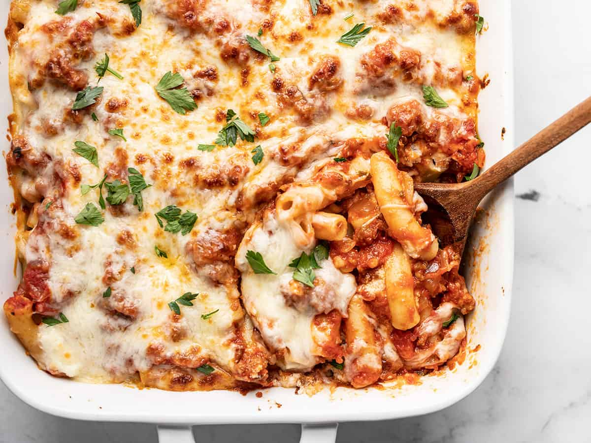

Baked Ziti

Description
This baked ziti is always a hit! A lady I worked with brought this in one day, and everyone loved it. Now it is the favorite of all my dinner guests.
I have made this also without the meat, and it is well received.
Ingredients
- 1 pound dry ziti pasta
- 1 onion, chopped
- 1 pound lean ground beef
- 2 (26 ounce) jars spaghetti sauce
- 6 ounces provolone cheese, sliced
- 1 ½ cups sour cream
- 6 ounces mozzarella cheese, shredded
- 2 tablespoons grated Parmesan cheese
Steps
- Bring a large pot of lightly salted water to a boil. Add ziti pasta, and cook until al dente, about 8 minutes; drain.
- Meanwhile, brown ground beef and onion in a large skillet over medium heat; stir in spaghetti sauce and simmer for 15 minutes.
- Preheat the oven to 350 degrees F (175 degrees C). Butter a 9x13-inch baking dish.
- Spread 1/2 of the ziti in the bottom of the prepared dish; top with Provolone cheese, sour cream, 1/2 of the meat sauce, remaining ziti,
mozzarella cheese, and remaining meat sauce. Top with grated Parmesan cheese.
- Bake in the preheated oven until heated through and cheeses have melted, about 30 minutes.